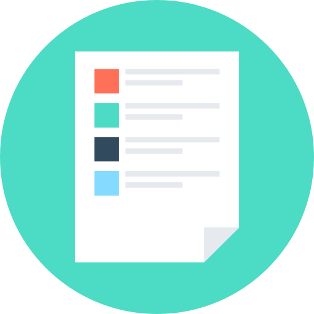
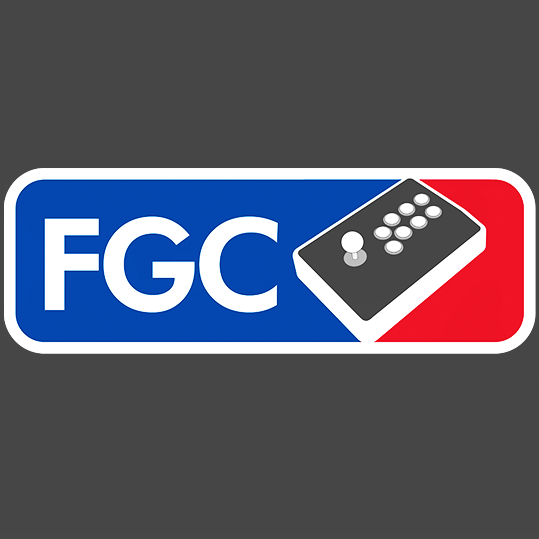

Hey, I'm Mohamed
I’m a passionate software engineer looking to positively impact technology.
I'm a second year student at Georgia Tech majoring in Computer Science
with a concentration in Artificial Intelligence and Information Internetworks. I have experience in both front-end (HTML and JavaScript)
and back-end (Java and C#) development. I strive to develop software that not only functions efficiently, but also seamlessly
integrates into our everyday lives because of its simplicity and intuitiveness.
I’m currently seeking a Software Engineering Internship for Summer 2019. In fact, I am always looking for opportunities
to work with developers that are as passionate about sharing their knowledge as I am about learning new technologies.
When I’m not in front of my computer screen, you can probably find me playing and or talking about video games.
Relevant Work Experience

Software Engineer Intern
May 2018 - August 2018
As a software engineering intern at FlightBridge, I helped develop the FlightBridge web application. FlightBridge is an aviation scheduling web application, and there are many requests for new features
and bug fixes which fell under my umbrella of responsibility. Overall, my responsibilities included design, analysis, specification, programming and support for the FlightBridge platform, and
I was fortunate enough to experience the full lifecycle implementation of this product.
HTML
C#
JavaScript
SQL
Projects

Chess GUI
Personal Project
December 2017
For those who competitively play chess, reading through previously played matches is a common practice in order to improve. Online, chess games
are reported using a standard PGN format which details every individual move, who played as white/black, the final board, and etc. This GUI takes in .pgn files
in the same directory (as a substitute for database) and displays the details of the match and also detects many famous chess openings.
Java
Bulletin Board
Personal Project
December 2017
This is a React web app that displays many Notes on a bulletin-board with notes that can be edited on, added to, and removed from.
It also displays many default notes grabbing sentences from the Bacon Ipsum JSON API.
React
HTML
CSS
Activities
GT-webdev
Coding Club
Fall 2017 - Present
GT-webdev is an organization that surrounds coding pertaining to web development. The club involves weekly meets
where members are given oppurtunity to learn about web development and try out neat excercises—education to college of computing students interested in web development in short.

Committee Leader
National Social Studies Honor Society (Rho Kappa)
Fall 2016 - Spring 2017
As committee leader of Rho Kappa, I initiated and organized a mock presidential election for the entire student body. This involved
the building and managment of several voting booths with automated tallying.

#FGC
The Fighting Game Community (FGC) is a competitve driven community revolving fighting games. As a community, we all work towards
getting better at our respective games and appreciating fighting games in general. I am currently attending weekly tournaments at
Gwinnett Brawl where I get to play other members of the community and share my love of fighting games with others.
General Member, Georgia Institute of Technology Mastering Android Development (GITMAD)
Coding Club
Fall 2017 - Present
Organization that strives to teach and encourage the development of Android applications for students
of all levels of experience. Currently, I have been using the knowledge I learn in GITMAD to enhance my Android Application
for my Objects & Design course.